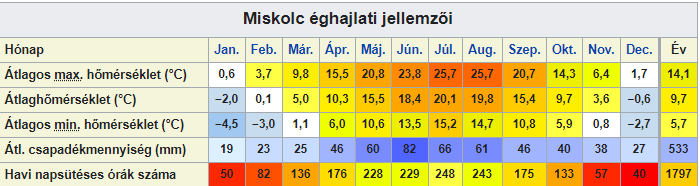

Miskolc (szlovákul és csehül Miškovec, németül Mischkolz) megyei jogú város Magyarország északkeleti részén, a Bükk-vidék keleti lejtőinél. Az Észak-Magyarországi régió központja és legnagyobb települése. Borsod-Abaúj-Zemplén vármegye és a Miskolci járás székhelye. A vármegye lakosságának negyede Miskolcon él.
Az ország negyedik legnépesebb városa Budapest, Debrecen és Szeged után, agglomerációval együtt Budapest és Debrecen után a harmadik legnagyobb, illetve a második legnagyobb belterülettel/beépített területtel rendelkező város Magyarországon Budapest után.
A környék Európa egyik legrégebben lakott területe, mint azt paleolit kori leletek tanúsítják. A különböző tájegységek találkozásánál, fontos kereskedőutak mentén épült település már a középkorban kereskedőváros volt, és 1365-ben Nagy Lajos királytól kapott városi rangot. A török hódoltság után ipara is fejlődésnek indult.
Miskolc Magyarország egyik legjelentősebb ipari központja. A hagyományos nehézipari és élelmiszeripari ágazatok mellett ma már jelentős szerephez jutnak a modern elektronikai, járműipari és vegyipari cégek is a város gazdaságában. Számos innovációs klaszter is működik a városban.
Miskolc ambíciója, hogy részben a helyi nagy múltú egyetem tudományos alapjaira építve, részben a már letelepedett nagyvállalatok műszaki hátterére alapozva, a térség kutató-fejlesztő központja legyen.
A rendszerváltás óta kulturális és idegenforgalmi szerepét igyekszik erősíteni; ebből a szempontból főbb látványosságai közé tartoznak a Miskolctapolca Barlangfürdő, a Diósgyőri vár, a lillafüredi Palotaszálló és a Miskolci Nemzeti Színház, illetve a Miskolci Állatkert és Kultúrpark. A régió vezető városaként az ennek megfelelő funkciókat is betölti; egyetemi város, a vármegye és környéke gazdasági, oktatási, kulturális központja. Miskolc város napja: május 11.
A város a Bükk-vidék keleti részén, abba „beágyazódva”, a Szinva, Hejő és a Sajó völgyében, különböző természeti és gazdasági tájegységek találkozásánál épült. A város kivételes szépségét e csodás fekvése miatt is köszönheti. A Sajó, a Bódva és a Hernád összeolvadó völgysíkja, a Miskolci kapu ősidők óta jelentős áru- és személyforgalom színtere.
Miskolc területe 236,66 km², ebből 54,21 km² a belterület, 29,34 km² a zártkert és 153,11 km² a külterület. A belterületi rész szélessége kelet-nyugat irányban 19 km, észak-dél irányban 10 km.[8] Mai felszíne – a kéregszerkezeti mozgások eredményeként – lépcsőzetes felépítésű. Keletről nyugat felé 30 km kiterjedésű, amin belül négy „lépcső” figyelhető meg; a magasságkülönbség eléri a 800 métert.
A város sokévi átlagos havi középhőmérsékleteit tekintve elmondható, hogy a leghidegebb hónap a január, míg a legmelegebb a július. Az évi közepes hőingás 22,1 °C. Az évi átlagos felhőborítottság 60% körüli.
Miskolc átlagos évi csapadékösszege 533 mm, ami jellegzetes évi menetet mutat, a nyári félév csapadékosabb, míg a téli félév szárazabb. A legkevesebb csapadék január-februárban hullik, a legcsapadékosabb hónap pedig – közel négyszer akkora értékkel – a június.
A napsütéses órák éves összege átlagosan 1800 óra, de évenként nagy változékonyságot mutat. Megfigyelhető a napfénytartam jellegzetes évi menete, a nyári hónapokban van a maximuma (havi 230–250 óra), míg november-január időszakban a minimuma (havi 40–60 óra).
A nyári napok (Tmax ≥ 25 °C) éves száma 70 nap. A hőségnapok (Tmax ≥ 30 °C) éves száma 15 nap. Forró nap (Tmax ≥ 35 °C) átlagosan kétévente 1 nap. A fagyos napok (Tmin ≤ 0 °C) éves száma 105 nap. A téli napok (Tmax ≤ 0 °C) éves száma 30 nap. A zord napok (Tmin ≤ –10 °C) éves száma 10 nap.
